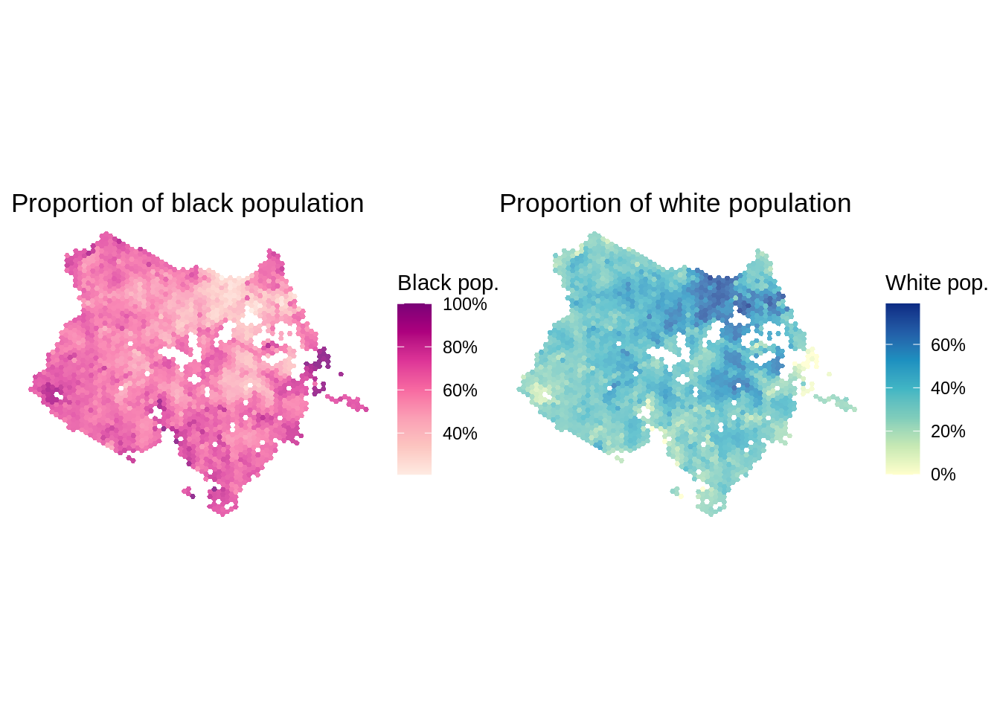

Para fazer o download dos dados do projeto AOP usando o pacote aopdata, você pode usar a função read_population(). Essa função baixa estimativas do Censo Demográfico de 2010 (REF) sobre a distribuição espacial da população e suas características em termos de renda domiciliar per capita, cor, sexo e idade. Nesta função, o parâmetro city permite você indicar os dados de qual cidade serão baixados.
Os dados estão agregados espacialmente em uma grade de hexágonos H3 na resolução 9, na qual cada hexágono tem uma área de 0.11 km2, o que equivale a aproximadamente o tamanho de um quarteirão. Para baixar os dados com as informações espaciais de geometria da grade espacial, você deve usar o parâmetro geometry = TRUE.
Neste exemplo, abaixo, nós mostramos como baixar os dados de população do Censo de 2010 para Fortaleza.
De imediato, se nota que os nomes das variáveis (colunas) da base de dados estão organizadas com códigos, como P001, P002…R001, R002 etc. A descrição completa do dicionário de variáveis está disponível aqui. A descrição de algumas dessas colunas nas próximas seções, onde mostramos como fazer a visualização de alguns desses dados em mapas e gráficos.
3.2 Mapa de população total
Antes de visualizar os dados do aopdata, nós precisamos carregar algumas bibliotecas de visualização e manipulação de dados.
Linking to GEOS 3.8.0, GDAL 3.0.4, PROJ 6.3.1; sf_use_s2() is TRUE
Com um comando, é possível visualizar a distribuição espacial da população de Fortaleza. A figura mostra um mapa coroplético onde a cor de cada célula da grade espacial é preenchida com base na quantidade total de pessoas residentes (variável P001).
Além da informação sobre a população total em cada célula, o dados do aopdata também permitem saber a quantidade de pessoas de diferentes cores (variáveis P002 a P005), sexo (variáveis P006 e P007) e faixas etárias (variáveis P010 à P016). O código abaixo ilustra como é simples calcular a proporção de pessoas negras e brancas em cada hexágono e visualizar esses dados num mapa.
pop_b<-ggplot()+geom_sf(data=subset(df, P001>0), aes(fill=P003/P001), color=NA, alpha=.8)+scale_fill_distiller(palette ="RdPu", direction =1, labels =percent)+labs(title='Proportion of black population', fill="Black pop.")+theme_void()pop_w<-ggplot()+geom_sf(data=subset(df, P001>0), aes(fill=P002/P001), color=NA, alpha=.8)+scale_fill_distiller(palette ="YlGnBu", direction =1, labels =percent)+labs(title='Proportion of white population', fill="White pop.")+theme_void()# plot figurepop_b+pop_w

3.4 Mapa de população por renda
Os dados trazem também informação sobre a renda domiciliar per capita média de cada hexágono (R001), e sua classificação em termos de quintil (R002) e decil de renda (R003). Com esses dados, é possível visualizar com o comando abaixo a distribuição espacial dos diferentes níveis de renda da cidade.R